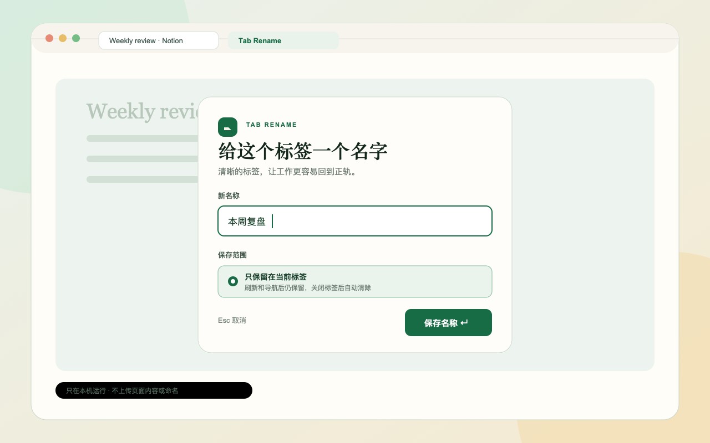
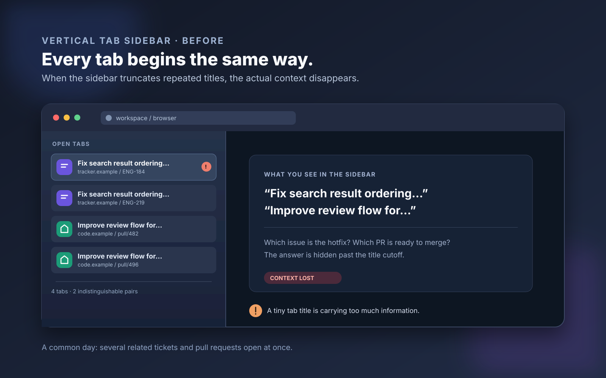
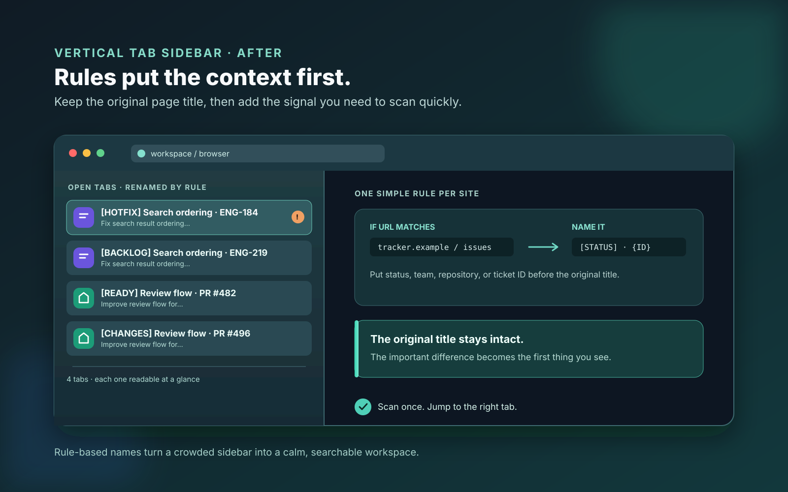
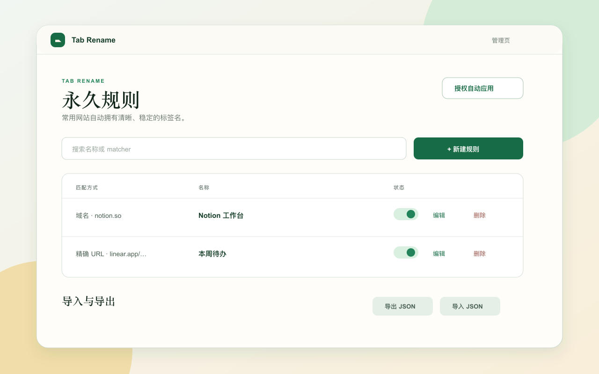

This page
Name a page for the moment. Navigate away and it disappears.
A calmer browser, one tab at a time
A focused Chrome extension for giving crowded tabs a name that makes sense to you. Local-first. No account. No tracking.
Free · no ads · data stays in your browser

Why Tab Rename
Projects sprawl. Dashboards all look alike. Tabs multiply. Tab Rename lets you replace browser noise with the words you already use to think.
Made for vertical tab bars
Issue trackers, pull-request queues, docs and dashboards often repeat the same title prefix. In a narrow vertical tab bar, the meaningful part is cut off — leaving several open tabs that look identical.
Illustrative workflow · fictitious domains, representative browser state


One reusable rule
Match the changing part of a familiar URL and bring it to the start of the title. The original page title stays there; the distinction arrives first.
https://tracker.example/issues/{1}
→
Issue · {1}
Title rule
Three ways to keep a name
Name a page for the moment. Navigate away and it disappears.
Keep the name across reloads and in-page navigation, until you close the tab.
Save a local rule and let Tab Rename apply it every time the right page opens.
Built for the long list
Open it with a shortcut. Enter saves. Escape closes. Nothing gets between you and the tab.
Use the toolbar icon or the page context menu when a name needs changing.
No network requests, telemetry or uploads. Rules and settings stay in Chrome storage on your device.
Search, edit, pause, export and import every permanent naming rule in one place.

FAQ
No. Page titles, URLs, rules and settings are processed and stored only in your browser. Tab Rename makes no network requests and has no telemetry.
Most normal web pages work. Chrome-protected pages such as chrome://, the Chrome Web Store, new-tab pages and other extension pages cannot be modified.
The priority is exact URL, then URL pattern, then domain. A page-only or tab-session name always takes priority over a saved rule.
Optional site access lets a permanent rule apply automatically after you navigate. You can deny or revoke it at any time; manual renaming still works.
Make room to think